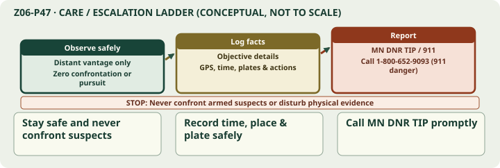

Z06-P47 · Hunting and fishing · New manuscript
Turn In Poachers (TIP) and Non-Confrontational Violation Reporting
Report suspected poaching, illegal fishing, or wildlife harassment safely without confronting armed or hostile individuals.
When it applies · Witnessing suspected wildlife, fish, AIS, or trespass violations.
Equipment · Notebook, phone/offline note app, MN DNR TIP 24-hour hotline info.

Actions
- Prioritize personal safety above all else—never confront, pursue, argue with, or attempt to detain suspected violators, who may be armed or hostile.[H15]
- From a safe concealed or distant vantage, record objective details: exact location/GPS, date, time, number of people, clothing/vehicle descriptions, boat registration or license plate, and specific observed actions.[H15]
- Report details promptly to the Minnesota DNR Turn In Poachers (TIP) line (1-800-652-9093) or local law enforcement/911 if immediate human danger exists.[H15]
Failure recognition · Confronting poachers in remote areas escalates minor property/wildlife cases into lethal interpersonal violence.[H15]
Verify · Observer stays safely disengaged, logs objective facts, and hands investigation exclusively to Conservation Officers or police.[H15]
Stop or change course · Stop observing and leave the area immediately if suspects notice you or show aggression; call 911 for active human threats.[H15, T01]
Evidence and editorial notes
- H15 · Minnesota DNR · Turn In Poachers (TIP) and Conservation Officer Reporting (Current web edition)
- Section: Turn In Poachers (TIP) and wildlife incident reporting · Conditions: Suspected wildlife violations, injured game, or unsafe incidents
Support: Observe from a safe distance, record location, time, descriptions, and license plates without confronting suspects, and report to MN DNR TIP or Conservation Officers.
Limitations: Do not pursue armed or hostile individuals or disturb physical evidence. · Conflicting evidence: None noted.
Editorial note: Defines Z06/Z07 non-confrontational incident reporting. · Specialist reviewer: Conservation enforcement reviewer
Primary source · checked 2026-11-25 - T01 · American Red Cross · First Aid Steps (current web edition)
- Section: First Aid Steps > Check the scene; check the person · Conditions: Lay responder in United States; assess safety before contact
Support: Check scene safety, responsiveness, breathing and immediately life-threatening conditions.
Limitations: Lay guidance does not replace advanced clinical or rescue protocols. · Conflicting evidence: None; universal first-response opening gate.
Editorial note: Anchors scene-safety-first rule across Z01. · Specialist reviewer: EMS and wilderness medicine
Primary source · checked 2026-11-24
Source lineage · New manuscript (Z06 P17 incident reporting) · Classification · New manuscript.